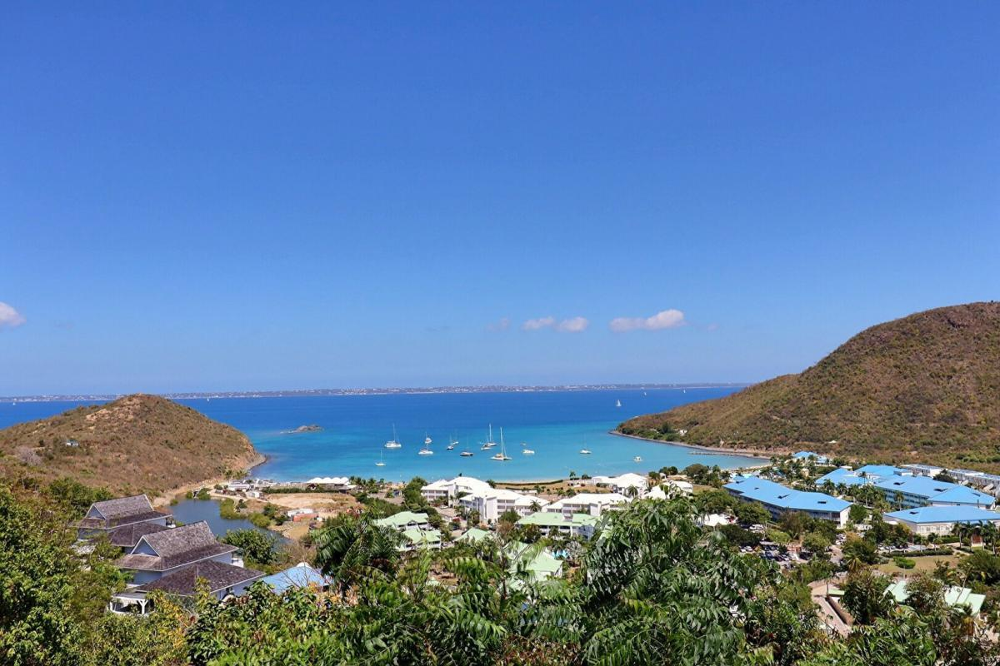
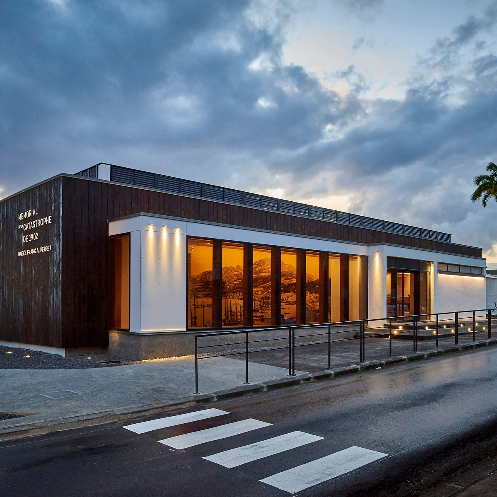

Nos experts ont recueilli pour vous des informations sur chaque commune de notre magnifique île aux fleurs.
Découvrez en un clic la description proposée par nos soins, des 34 communes qui composent la Martinique.
Ajoupa-Bouillon (97216)
A environ 40 kilomètres de Fort-de-France, au nord de la Martinique, se situe L'Ajoupa-Bouillon, charmante commune située sur le flanc de la montagne Pelée.
Les habitants de cette commune sont les Bouillonais et les Bouillonaises.
La commune tire son nom d’un colon français, Jean Robert, sieur de bouillon qui avait construit un abri de fortune en bois (ajoupa en créole) sur la route du volcan. Une éruption en 1902 a contraint les habitants à quitter l’ancienne ville. L’église de l’Immaculée Conception construite en 1848 a résisté à la catastrophe et peut encore être visitée ce qui en fait un site touristique.
L’Ajoupa-Bouillon offre un cadre naturel exceptionnel pour les amateurs de randonnée pédestre. Cette zone humide et forestière permet d’y observer une très grande variété d’espèces botaniques tropicales en visitant les jardins ou le sentier floral.
Vous y découvrirez des endroits magnifiques comme les gorges de la Falaise ou le saut de Babin. Ce sont de magnifiques cascades d’eau où l’on peut se baigner dans des eaux claires et fraîches des piscines naturelles.
Eglise de l’Immaculée Conception
Gorges de la falaises
Les Anses d'Arlet (97217)
La commune des Anses-d’arlet se situe à la pointe sud-ouest de la Martinique, juste à côté des Trois-ilets et du Diamant. Au bord de la mer des Caraïbes, la ville bénéficie d’une situation exceptionnelle.
Les habitants de cette commune sont les Arlésiens et les Arlésiennes
Vous êtes à la recherche d’un petit coin de paradis avec des paysages dignes des plus belles cartes postales. Les plages des Anses d'Arlet vous offrent ce cadre idyllique et authentique. Vous pourrez admirer le bourg depuis le ponton. Avec un simple masque et un tuba, vous pourrez observer de magnifiques spécimens de poissons tropicaux autour des rochers, car l’eau y est particulièrement claire.
Sur la route des Anses, vous pourrez découvrir une succession de petites plages plus pittoresques les unes que les autres. Elles sont bordées par la forêt tropicale et les couleurs ressortent particulièrement. Certaines ont su garder un charme très naturel. Parmi elles, vous pourrez vous baigner et passer un agréable moment sur les plages de la petite ou de la grande Anse, ainsi que l’Anse Dufour et l’Anse noire.
Anse Dufour
Anse Noire
Basse-Pointe (97218)
Basse-Pointe est situé au Nord de la Martinique, face à l'Atlantique, avec pour vue prédominante, la prestigieuse montagne Pelée. C’est dans cette ville que naquirent le célèbre écrivain Aimé Césaire et Hippolyte Morestin, un grand chirurgien esthétique. Les colons profiteront des terres riches pour exploiter la Canne à sucre.
Les habitants de cette commune sont les Pointois et les Pointoises
Aprés l’abolition de l’esclavage, la population se diversifie et devient en majorité indienne, deux temples indiens y sont d’ailleurs érigés. L’agriculture est toujours l’activité principale de la commune et notamment celle de la banane. Les anciennes habitations sucrières à l’architecture coloniale impressionnante : Pécoul, Gradis, Leyritz et Chalvet sont toujours debout. Elles ne sont pas ouvertes au public à part celle de Chalvet .
Basse-Pointe n’a pas de plage et la baignade n’est pas conseillée, elle est par contre un lieu de rendez-vous précieux pour les surfeurs expérimentés qui aiment braver les vagues tumultueuses ! Les randonneurs apprécient le sentier qui mène au sommet de la montagne Pelée. Les grands monuments de Basse-Pointe sont la Cloche du Loup Garou, l'Église, le Pont de Gradis, et les sculptures Biface de Borne 01.
Eglise Saint Jean-Baptiste
Vue de Basse-Pointe
Bellefontaine (97222)
Bellefontaine un jolie nom pour une commune encore jeune, puisque sa création ne remonte qu’à 1950, lorsque Bellefontaine fut officiellement détachée de la tutelle de Case-pilote. Un village au charme d’un petit port de pêcheurs, mais dont la pêche ne représente plus aujourd’hui l’activité principale, bien que nombre de gommiers multicolores soient toujours présents.
Les habitants de cette commune sont les Bellifontains et les Bellifontaines
La première place en termes d’activité revient à l’agriculture et au maraîchage qui sur les hauteurs fraîches et verdoyantes des environs approvisionnent les marchés de la Martinique en légumes et agrumes de toutes sortes mais surtout la production d’électricité avec la plus grosse centrale électrique de l’île. Avec 11,82 km2, elle est la plus petite commune en superficie de la Martinique.
Vue de Bellefontaine
Plage de Fond Boucher
Le Carbet (97223)
A quelques kilomètres au nord de Fort-de-France sur la côte Caraïbe se situe Le Carbet. La commune est située dans un magnifique décor côtier et montagneux.
Les habitants de cette commune sont les Carbétiens et les Carbétiennes
Au milieu de cinq pitons, le lieu appelle à la randonnée pour découvrir les beautés de la forêt tropicale. Vous pourrez y visiter l’impressionnant canal de Beauregard, creusé à flanc de montagne par des esclaves et depuis lequel on peut observer . la Cascade du Saut d’Eau du Carbet. Dans une ancienne sucrerie se trouve le Zoo de Martinique.
Cascade du Saut d'eau
Zoo de la Martinique
Case-Pilote (97222)
La commune de Case-Pilote se situe à l’Ouest de la Martinique, sur la Côte-Pilote se situe à l’Ouest de la Martinique, sur la Côte Caraïbe, tout près de Fort-de-France et au pied des Pitons du Carbet. Elle doit son nom au Chef Indien qui vivait à cet endroit, à l’arrivée des colons français.
Les habitants de cette commune sont les Pilotins du Nord et les Pilotines du Nord
Cinq rivières passent sur le territoire de Case Pilote : Rivière Fond Bellemare, Rivière Fond Bourlet, Rivière Micolo. Cette commune est très ancienne et l’activité principale reste la pêche. Le tourisme n’est pas très actif dans la ville, toutefois la magnifique Eglise Notre Dame de l’Assomption, classée monument historique et la belle mairie de Case-Pilote, Place Gaston Mommerville sont des bâtisses intéressantes à découvrir.
La plongée est une activité aquatique incontournable. Des circuits en bateau permettent d’accéder aux grottes marines pour une visite découverte absolument inoubliable. Les amoureux de la nature apprécieront tout particulièrement ce petit havre de paix.

Eglise Notre Dame de l'Assomption

Place Gaston Monnerville
Le Diamant (97223)
Le Diamant est une charmante petite ville située au sud-ouest de la Martinique. Elle est très certainement l’une des destinations privilégiées des vacanciers pour la beauté de son paysage.
Les habitants de cette commune sont les Diamantinois et les Diamantinoises
Le Diamant tire son nom du grand rocher en forme de diamant qui se situe face au littoral. Véritable joyau de l’île, son histoire est liée à la piraterie. A l’origine, elle a été successivement peuplée par plusieurs tribus avant l’arrivée des colons français au 17e siècle. La Martinique ayant été très convoitée par les Anglais, le lieu fut le théâtre de plusieurs affrontements.
Le Rocher du Diamant
Mémorial de l'Anse Cafard
Ducos (97224)
La commune de Ducos n’a pas toujours porté ce nom. Jusqu’en 1855 elle s’appelait Trou-au-Chat avant d’être rebaptisée en hommage à Théodore Ducos, ministre de la marine sous Napoléon III.
Les habitants de cette commune sont les Ducosais et les Ducosaises
Cette commune située à quelques kilomètres de Fort-de-France et du Lamentin s’est peu à peu transformée en ville dortoir à cause d’une politique d’urbanisation excessive. C’est dans cette commune que l’on trouve l’unique prison de la Martinique ainsi que le centre de détention des étrangers. C’est également là que l’on trouve le seul barrage hydraulique de la Martinique. Le barrage Saint-Pierre-Manzo d’une longueur de 352 mètres.
Il y a également la plus grande zone industrielle de l’île. Si vous recherchez des lieux touristiques, ils sont relativement limités. il y a bien l’église Notre-Dame-La-Nativité qui date de 1901, la mangrove en arrière pays
Eglise Notre Dame de la Nativité
Barrage de Saint Pierre Manzo
Fonds-Saint-Denis (97250)
Fonds-Saint-Denis est une commune du nord de la Martinique près de la montagne Pelé et de Saint-Pierre.
Les habitants de cette commune sont les Denisiens et les Denisiennes
On y trouve notamment un canal qui s étant sur 4km que l'on appelle "le canal des esclaves".
C'est sur ces terres que le premier moulin a vent fut installé. C'est un magnifique endroit avec un long cour d eau, de la nature et un paysage tropical très fleuri, son activité principale est le tourisme et l agriculture avec ces plantations de fleurs, de légumes et d arbres
Cascade de Saut Gendarme
Canal des Esclaves
Fort-de-France (97200/97234)
La ville de Fort-de-France est le chef-lieu de la Martinique (et non la capitale). Située sur la partie ouest du littoral, sur la mer des Caraïbes elle est le théâtre de l’arrivée de tous les voyageurs, qu’ils arrivent en avion ou en bateau de croisière.
Les habitants de cette commune sont les Folayais et les Folayaises.
À l’origine, c’est un Fort royal qui a été bâti dès la seconde moitié du 17e siècle pour défendre les positions françaises face aux Anglais et aux Hollandais. C’est après plusieurs années que commence l’aménagement de la ville. Aujourd’hui, elle est le centre des activités économiques, culturelles et touristiques.
Si vous voulez un échantillon de toutes les spécialités culinaires créoles, vous trouverez tous les produits locaux dans les nombreux marchés de Fort-de-France. Certains sont dédiés aux fruits et légumes, d’autres aux viandes, aux poissons, aux épices ou encore à l’artisanat local. La Martinique est surnommée à juste titre « l’île aux fleurs » que vous découvrirez durant vos promenades dans les jardins comme celui de Balata, avant d’aller profiter de la plage.
Les amoureux d’architecture apprécieront la visite des nombreuses fortifications militaires de la ville et ses alentours. Les nombreuses églises offrent parfois un design original, à l’image de la cathédrale Saint-Louis. Les façades de certaines maisons sont remarquables comme celles de la maison Saint-Cyr et de la bibliothèque Schœlcher.

Le marché de Fort-de-France

Cathédrale Saint Louis
Le François (97240)
Le François est une commune de l'est de la Martinique peuplée de 17 835 habitants.
Les habitants de cette commune sont les Franciscains et les Franciscaines.
Dans cette belle commune, on retrouve l'habitation Clément qui est un musée qui raconte l histoire de l'art et des esclaves de Martinique.
On y retrouve aussi des plages, un paysage tropical et la célèbre baignoire de Josephine qui est une longue etendue de mer aux sables blanc dans lequel on peut tremper nos pieds et se baigner. Celle ci est chaude et parfaite pour se relaxer surtout avec les poissons et coraux qui se trouvent dans cette eau claire.
L'Habitation Clément

La baignoire de Joséphine
Grand Rivière (97218)
La commune du Grand Riviere se situe au nord de la Martinique. Elle compte 610 habitants. Au pied de la montagne Pelé, on la surnomme "la commune du bout du monde".
Les habitants de cette commune sont les Riverains et les Riveraines
On peut y faire de la randonnée, de la pêche, ou découvrir ses nombreux célèbres bassins comme par exemple "le bassin des hommes".
Accompagnés de la nature , de ces cascades et de l air frais, vous y serez coupé de la civilisation, un endroit parfait pour se calmer, reposer et aimer la beauté du l île.
Cascade Couleuvre
Pont en direction de Grand Rivière
Gros-Morne (97213)
Le Gros-Morne est situé au nord Atlantique de la Martinique. Elle compte environ 10 000 habitants avec une superficie de 54 km².
Les habitants de cette commune sont les Gros-Mornais et les Gros-Mornaises.
C'est ici que l'ananas et le manioc sont cultivés, nourriture essentielle à la culture caribéenne.
Dans un environnement de forêt tropicale, vous serez entouré de bambous, de cascades comme celle du "saut d argis".
Si vous êtes un amateur de rhum ne ratez surtout pas "la distillerie de l'habitation Saint-Étienne".
L'Habitation Saint-Étienne
Le Saut d'Argis
Le Lamentin (97232)
Le Lamentin est une commune situé au centre de la Martinique avec 40 000 habitants sur 62,3 km². Elle fait partie de la Communaute d'Agglomeration du Centre de la Martinique.
Les habitants de cette commune sont les Lamentinois et les Lamentinoises.
Elle est traversé par "la Lézarde" un long cour d'eau. Vous y verez beaucoup de canaux et aussi la mangrove que vous pourrez visiter lors d'une escapade en kayak.
Etant la deuxième ville la plus peuplée après Fort-de-France, elle regroupe beaucoup d'activités industrielles comme l'aéroport "Aimé Césaire" ,et commerciales comme "la Galleria" et "Place d'armes " qui sont les 2 plus grands centre commerciaux de l île.
Ne les ratez surtout pas!
Hippodrome de Martinique
Eglise Saint Laurent
Le Lorrain (97214)
Le Lorrain est situé au nord atlantique de la Martinique. Elle possède environ 7000 habitants sur 50,6 km². Elle fait partie de l unite urbaine du Lorrain.
Les habitants de cette commune sont les Lorrinois et les Lorrinoises.
Possedant 5033 hectares, elle est la troisième commune de l’île
Vous y trouverez deux rivières : "la rivière du Lorrain" au sud et "la rivière Capot" au nord , mais aussi le fameux volcan du Morne Jacob qui a créé cette fameuse plage au sable noir qui attire au mois de mai, les tortues Luth
Ne les manquez surtout pas!
Morne Jacob
Rivière Capot
Le Macouba (97218)
Le Macouba, est une commune du nord de la Martinique avec environ 1000 habitants sur 17 km² situé en face de l ocean Atlantique.
Les habitants de cette commune sont les Macoubétins et les Macoubétines.
Elle est surnomme "le petit bout du monde". Le nom de la ville vient d'un poisson très réputé ,le macouba, qui vit en eau douce. Il était très rare ce qui a poussé ces habitants a immortaliser celui ci en se nommant ainsi.
Vous y verrez la mer , ou bien" la distillerie du Fonds- préville". Il y a aussi des activités nautiques dont la plongée sous-marine. La mer est tellement claire et belle que vous vous croirez au paradis entouré de cette immense biodiversité.

Vue de Macouba
Distillerie du Fonds-Préville
Le Marigot (97225)
Le Marigot est une commune du Nord Atlantique de la Martinique. La population est de 3 078 habitants. Ils sont appelés les Marigotins et les Marigotines.
Les habitants de cette commune sont les Marigotins et les Marigotines.
Elle développe l'élevage et la commercialisation des écrevisses ou crevettes d'eau douce à Séguineau. C'est la plus grande superficie aquacole de la Martinique avec 40 bassins.
Son agriculture est aussi sucrière. Lieu très calme et tranquille où malheureusement la baignade n est pas autorisé à cause des forts courants.
Si vous êtes un amateur de surf cela vous tentra forcément de vous mesurer au vagues! N'hesitez pas mais restez prudent. Certains préfèrent la randonnée ou simplement apprécier la vue.
Vue du Marigot

Anse Charpentier
Le Marin (97290)
Le Marin est une commune qui compte environ 8647 habitants. Localisé sur la côte sud de la Martinique, entre Sainte-Luce et Sainte-Anne, Le Marin dispose d'un immense port de plaisance, connu pour être l'un des plus grands de la Caraïbe !
Les habitants de cette commune sont les Marinois et les Marinoises.
Propice à la promenade, sa marina est jalonnée de nombreux commerces, bars et restaurants qui en font une destination touristique prisée.
À ces atouts s'ajoute une ambiance animée, ainsi que de nombreuses activités proposées aux vacanciers : voile, kayak, ski nautique, pêche en mer, plongée sous-marine ou encore windsurf, les amateurs de sports nautiques trouveront certainement leur bonheur !
La commune du Marin séduit aussi les amoureux de paysages côtiers, avec le sauvage cap Macré et sa très belle plage de l'anse Baleine. Cette dernière, accessible qu'à pied par un chemin caillouteux, est un havre de paix et de détente au sable blanc et aux eaux turquoises...
Avant de quitter Le Marin ne manquez surtout pas la visite de son église Saint-Étienne, l'une des plus anciennes de Martinique.
Datée du XVIIIe siècle et classée Monument Historique, elle offre une superbe façade de style jésuite en pierre de taille et se distingue par son clocher séparé du corps de l'édifice. À l'intérieur, la charpente évoque la carène d'un bateau renversé, et le maître-autel en marbre polychrome, véritable joyau, présente un magnifique bas-relief illustrant la Cène.

La Marina du Marin
Cap Macré
Le Morne-Rouge (97260)
Le Morne-Rouge est une commune qui compte environ 4635 habitants.
Les habitants de cette commune sont les Péléens et les Péléenes.
A 450 m d’altitude, sur les contreforts de la Montagne Pelée, le Morne Rouge est la commune la plus élevée de Martinique. Elle n’était à l’origine que le quartier " des étages " de Saint-Pierre, avant d’obtenir le rang de commune en 1889.
Situé sur un plateau, entouré au Nord par la Montagne Pelée, au sud par les Pitons du Carbet et à l'est par le Morne Jacob, le Morne-Rouge est le départ de nombreuses randonnées : l’ascension de la Pelée par l’Aileron, la belle Trace des Jésuites, le Morne Jacob, etc.
Son climat frais est propice à la culture de l’ananas et de certaines fleurs tropicales. Les amoureux de la nature apprécieront la pépinière des Jardins de l’Estripaut et la Plantation Mc Intosh qui fait voyager les fleurs de la Martinique dans le monde entier. Autre curiosité, le Parc des Palmiers compte plus de 200 espèces. Une visite s’impose à la Maison Régionale des Volcans. A voir également, la réplique de la Grotte de Lourdes.
Le saviez-vous ? L’eau de source de montagne « Chanflor », est extraite de la source du Mont Béni et mise en bouteille sur place, au Morne Rouge. Son site de captage naturellement protégé lui garantit une qualité irréprochable et la situe parmi les eaux les plus pures de France.
Le Morne-Rouge entretien un culte particulier à Notre Dame de la Délivrande, patronne et protectrice de la Martinique. Le Calvaire de Morne-Rouge, inscrit à l’inventaire des Monuments Historiques, accueille chaque année des milliers de pèlerins, le dimanche suivant le 30 août.
Eglise Notre Dame de la Délivrande

Maison des volcans
Le Morne-Vert (97226)
Le Morne-Vert est une commune située au centre-ouest de l'île. Elle compte 1825 habitants.
Les habitants de cette commune sont les Verdimornais et les Verdimonaises
Situé au centre-ouest de la Martinique, Le Morne-Vert est un agréable village perché au pied des célèbres pitons du Carbet. Niché dans un écrin de verdure préservé, ce havre de paix aux allures de petite Suisse est prisé des amateurs de marche, mais aussi des visiteurs et des locaux qui y apprécient son climat agréable, plus frais que sur le littoral.
Bref, une halte des plus reposantes au milieu d'un paysage montagneux et verdoyant qui domine majestueusement la mer des Caraïbes...
Destination de prédilection pour les randonneurs, Le Morne-Vert constitue un formidable point de départ pour partir à la découverte de la forêt tropicale ou s'adonner à la difficile ascension du piton Lacroix. La source Attila, située en plein cœur de la forêt domaniale en suivant la direction Caplet, est un site très apprécié des marcheurs qui viennent s'y rafraîchir après l'effort.
Ne manquez pas enfin de franchir le seuil de l'église Saint-Martin, celle-ci abrite un beau tabernacle en marbre sculpté !
Vue du Morne-Vert
Source Attila
Le Prêcheur (97250)
Le Prêcheur est une commune qui compte 1291 habitants.
Les habitants de cette commune sont les Préchotins et les Préchotines.
À dix kilomètres au nord de la ville de Saint-Pierre, non loin de la montagne Pelée, s'étend Le Prêcheur, un joli petit village de pêcheurs situé au bord de la mer des Caraïbes. Un vieux clocher du XVIIe siècle, vestige de l'ancienne église du Prêcheur, témoigne des temps passés.
Dans ce village pittoresque qui a vu séjourner Françoise d'Aubigné, future Madame de Maintenon, on peut également admirer un beau phare de près de douze mètres de haut, inscrit aux monuments historiques.
À quatre kilomètres au nord du village, non loin de l'habitation Céron, une ancienne sucrerie du XVIIe siècle ouverte à la visite, vous pourrez profiter de la superbe plage de sable gris de l'anse Céron, bordée d'arbres et de cocotiers. Bien ombragée, elle est idéale pour profiter d'un moment de détente, d'une baignade rafraîchissante ou d'un pique-nique improvisé. De là, un magnifique sentier de randonnée pédestre en direction de Grand'Rivière mène les amoureux de paysages côtiers jusqu'à plusieurs anses sauvages du littoral caraïbe, comme l'anse Couleuvre, l'anse Lévrier, l'anse à Voile ou encore l'anse des Galets.

L'Habitation Céron
Anse Couleuvre
Le Robert (97231)
Le Robert est, par sa population, la troisième ville de la Martinique après Fort-de-France et Le Lamentin. Elle compte, en 2019, 21 913 habitants.
Les habitants de cette communes sont les Robertins et les Robertines.
C'est dans une baie paradisiaque à l'eau couleur turquoise que Le Robert a installé les maisons de sa ville. Située sur l'océan Atlantique, la commune bénéficie d'une barrière de corail, de haut fond et surtout d'un cordon d'îles, appelées îlets, qui protège ses eaux des tumultes de l'océan et du vent, parfois violent.
Le Robert a donc tout pour plaire et particulièrement un emplacement privilégié sur l'île de la Martinique. Les îlets sont privés, mais certains sont visitables et c'est là où réside tout le charme de la commune. En effet, c'est sur les îlets que se trouvent les plages de sable fin et non en bordure côtière de la ville.
Les fonds marins de la baie de Robert sont très colorés et riches, et apportent un vif intérêt aux personnes qui s'y attardent. Les activités les plus intéressantes à faire : voir une course de Yoles, visiter les cascades de Saint-Nicolas, visiter les îlets et découvrir les iguanes à l'îlet Chancel, ainsi que les ruines archéologiques.

Îlet Chancel
Cascade Fonds Nicolas
Rivière-Pilote (97211)
Rivière-Pilote est une commune qui compte environ 11675 habitants.
Les habitants de cette commune sont les Pilotins du Sud et les Pilotines du Sud.
Au cœur des terres, elle possède cependant un accès à la mer avec des plages paradisiaques.
La ville de Rivière-Pilote tient son nom d'un chef Caraïbe du XVIIe siècle favorable aux colons français lors du partage de l'île à la même époque. La création de la commune est cependant plus ancienne et est l'œuvre des Arawaks. Peuplée par les colons dès le XVIIe siècle, elle est connue depuis toujours pour avoir été, durant l'esclavage, un refuge pour tous les rebelles et les nègres marrons, notamment au XVIIIe siècle.
Principalement tournée vers la culture agricole, avec notamment la production de rhum, Rivière-Pilote est également un haut lieu du tourisme en Martinique. Elle mêle à merveille sites naturels et monuments historiques.
C’est au sud de la ville, sur sa magnifique plage d'Anse Figuier que l’on peut admirer l’incroyable point de vue sur le rocher du Diamant et « la femme couchée ». Les amateurs de photographie y réaliseront leurs meilleures prises de vue. Les passionnés d’escalade viennent s’attaquer à la paroi du rocher Zombi. Arrêtez-vous pour découvrir la plus ancienne église de la Martinique, celle de l’Immaculée-Conception ainsi que la collection de Palmiers du jardin privé Las Palmas.
La visite de l’écomusée vous apprendra beaucoup de choses sur l’histoire du site amérindien de l’Anse Figuier. Il contient une collection de pièces archéologiques et retrace l’histoire de l’île de la préhistoire à aujourd’hui en passant par la colonisation et l’esclavage. C’est aussi à Rivière-Pilote que l’on peut visiter la célèbre distillerie de La Mauny.
Anse Figuier
Distillerie La Mauny
Rivière-Salée (97215)
Rivière-Salée est une commune qui compte environ 11780 habitants.
Les habitants de cette commune sont les Saléens et les Saléenes. Rivière-Salée était nommée Cul-de-Sac-à-Vaches jusqu'en 1716.
Fondée au début du XVIIIe siècle, la paroisse de Rivière-Salée se développe peu à peu au fil des années, notamment avec l'ouverture d'usines modernes au début du XIXe siècle. Principalement tournée vers la culture sucrière, la commune connaît également à l'époque d'importantes activités de production de café, de coton ou de cacao.
Pleine de charme, la ville de Rivière-Salée continue d'attirer de nombreux visiteurs par le charme de son authenticité et par sa proximité avec certaines des plus belles communes de l'île.
Il n'y a pas beaucoup de tourisme à Rivière-Salée, mais vous pouvez tout de même profiter d'une visite agréable dans le centre du Petit-Bourg et découvrir également les maisons anciennes en bois, rue Schoelcher.
Eglise du Petit-Bourg
Vue de Rivière-Salée
Saint-Esprit (97270)
Saint-Esprit est une commune qui compte 10120 habitants.
Les habitants de cette commune sont les Spiritains et les Spiritaines.
Découvrez le patrimoine culturel de la Martinique en visitant le musée des arts et des traditions populaires. Vous y apprendrez beaucoup de choses au sujet de la vie des habitants de l’île. En allant faire le marché, vous pourrez déguster les meilleurs produits de la région.
C’est en prenant la route des crêtes au nord-est de la ville que l’on découvre un paysage somptueux.
Depuis le point de vue du Morne Baldara, vous découvrirez ce que l’on considère comme l’un des plus beaux panoramas de l’île et vous pourrez admirer la cascade de Firmin.
Les amateurs d’histoire s’arrêtent à la source caraïbe qui porte le nom de la tribu indienne du même nom à qui l’on doit ce magnifique vestige.
Vue du Saint-Esprit
Hotel de Ville du Saint-Esprit
Saint-Joseph (97212)
Saint-Joseph est une commune qui compte environ 11 000 habitants et est située dans le centre de l'île.
Les habitants de cette commune sont les Joséphins et les Joséphines
La commune de Saint-Joseph est caractérisée par un paysage de collines et de vallées, avec des cultures de bananes, de canne à sucre et de fruits tropicaux. Elle dispose également de sites touristiques tels que la cascade de Saut Gendarme, le musée de la banane, le parc naturel régional de la Martinique et le jardin de Balata.
L'histoire de Saint-Joseph est marquée par l'esclavage, la colonisation française et la lutte pour l'indépendance. La commune a été touchée par des catastrophes naturelles, notamment l'éruption de la montagne Pelée en 1902 qui a détruit une grande partie de la ville.
Aujourd'hui, Saint-Joseph est une commune dynamique, avec un fort potentiel agricole et touristique. Elle accueille également des entreprises industrielles et de services, et offre un cadre de vie agréable à ses habitants.
Coeur Bouliki
Eglise de Saint-Joseph
Saint-Pierre (97250)
Saint-Pierre est une commune qui compte environ 4107 habitants.
Ses habitants sont les Pierrotins et les Pirrotines.
Elle est connue pour son histoire riche et tragique, car elle a été dévastée par l'éruption de la montagne Pelée en 1902, qui a tué la majorité de sa population.
Aujourd'hui, Saint-Pierre est une ville charmante avec une population d'environ 4 000 habitants. Elle est connue pour ses plages magnifiques, notamment celle de la Anse Turin, ainsi que pour ses activités touristiques, notamment la plongée sous-marine et la randonnée. La ville est également connue pour ses festivals, tels que la Fête des Fruits et Légumes en juillet.
Saint-Pierre abrite également plusieurs sites historiques, tels que le musée Franck A. Perret qui relate l'éruption de la montagne Pelée, ainsi que la cathédrale Notre-Dame-de l'Assomption, qui a été construite après la tragédie.
En somme, Saint-Pierre est une ville pleine d'histoire et de charme, avec de nombreuses attractions touristiques pour les visiteurs.

Mémorial de la catastrophe de 1902

Anse Turin
Sainte-Anne (97227)
Sainte-Anne est une commune qui compte environ 4264 habitants.
Ses habitants sont les Saintannais et les Saintannaise.
Elle est connue pour ses plages de sable blanc et ses eaux turquoises, qui attirent de nombreux touristes chaque année.
La commune est également riche en histoire et en patrimoine, avec des monuments tels que l'église Notre-Dame-de-Bon-Voyage, construite au XVIIIe siècle, et le moulin de Val d'Or, un ancien moulin à sucre.
Enfin, la commune de Sainte-Anne est également un lieu de fête et de célébration, avec des événements tels que le carnaval de Sainte-Anne en février et le festival de la mer en août.
Moulin du Val d'Or
Plage de Sainte-Anne
Sainte-Luce (97228)
Sainte-Luce est une commune qui compte environ 9943 habitants.
Ses habitants sont les Lucéens et les Lucéenes.
La ville est connue pour ses belles plages, son climat chaud et ensoleillé, ainsi que pour sa cuisine créole.
Les plages de Sainte-Luce sont l'attraction principale de la ville, avec des plages de sable blanc comme la plage de Gros Raisin, la plage de Corps de Garde, et la plage de l'Anse Mabouya. Les visiteurs peuvent y pratiquer des sports nautiques tels que la plongée sous-marine, le snorkeling et le surf.
La cuisine créole est également très populaire à Sainte-Luce, avec de nombreux restaurants proposant des plats locaux tels que le colombo de poulet, le poisson grillé et les accras de morue. Les visiteurs peuvent également profiter de la vie nocturne animée de la ville, avec des bars et des discothèques proposant de la musique live et de la danse.
Enfin, la ville de Sainte-Luce est également connue pour ses événements culturels, tels que le carnaval de Sainte-Luce en février et le festival des pêcheurs en juin, qui célèbrent la culture et les traditions locales de la ville.
Anse Mabouya
Anse Gros Raisin
Sainte-Marie (97230)
Sainte-Marie est une ville située sur la côte atlantique de la Martinique.
Ses habitants sont les Samaritains et les Samaritaines.
Elle est située à environ 20 kilomètres au nord-est de Fort-de-France.
Sainte-Marie est connue pour ses plages de sable noir, ses forêts luxuriantes et ses montagnes volcaniques. Elle abrite également plusieurs sites historiques, notamment la maison de la banane, qui retrace l'histoire de la production de bananes sur l'île, et le musée du rhum Saint-James, qui présente l'histoire de la production de rhum dans la région.
La ville est également connue pour son marché local animé, où les visiteurs peuvent acheter des fruits et légumes frais, des épices et des produits artisanaux locaux.Sainte-Marie est une destination touristique populaire pour ceux qui cherchent à découvrir la culture et l'histoire de la Martinique tout en profitant de ses plages et de son environnement naturel magnifique.
Musée du rhum Saint-James

Musée de la Banane
Schoelcher (97233)
Schoelcher est une commune située sur la côte ouest de la Martinique.
Ses habitants sont les Schoelcherois et les Schoelcheroises.
Elle doit son nom au célèbre abolitionniste français Victor Schoelcher. Schoelcher est connue pour son université, l'Université des Antilles et de la Guyane, qui accueille des étudiants de toute la région. Elle dispose également de plusieurs plages populaires telles que la plage de Madiana et la plage de Batelière, où les visiteurs peuvent profiter du soleil, de la mer et des sports nautiques.
La commune possède également des sites historiques tels que la Maison de la Canne, qui présente l'histoire de la production de sucre et de rhum dans la région, et la bibliothèque Schoelcher, un bâtiment impressionnant conçu par l'architecte français Henri Picq et offert à la ville par Victor Schoelcher lui-même.
Schoelcher est une destination populaire pour les voyageurs qui cherchent à découvrir l'histoire et la culture de la Martinique tout en profitant de ses plages et de son environnement naturel.
Plage de Madiana
Complexe Cinématographique Madiana
Trinité (97220)
Trinité est une commune située sur la côte nord-est de la Martinique.
Ses habitants sont les Trinitéens et les Trinitéenes.
Trinité est connue pour ses plages de sable blanc et ses eaux cristallines, notamment la plage de l'Autre Bord, la plage du Cosmy et la plage des Raisiniers. La commune possède également un marché local animé où les visiteurs peuvent acheter des fruits et légumes frais, ainsi que des produits artisanaux locaux.
Trinité est également célèbre pour son patrimoine historique et culturel. Elle abrite notamment la célèbre distillerie Depaz, qui produit du rhum depuis plus de 300 ans, ainsi que l'église de la Sainte-Trinité, une belle église de style néo-classique construite en 1846.
La commune est également un lieu de pèlerinage pour les catholiques de la Martinique et d'autres régions, car elle abrite la chapelle de Notre-Dame de la Délivrande, un sanctuaire dédié à la Vierge Marie qui attire de nombreux visiteurs chaque année.
Trinité est une destination populaire pour les voyageurs qui cherchent à découvrir l'histoire et la culture de la Martinique tout en profitant de ses plages et de son environnement naturel magnifique.
Plage de Cosmy

Marché de Trinité
Trois-Îlets (97229)
Les Trois-Îlets est une ville située sur la côte sud-ouest de l'île de la Martinique.
Ses habitants sont les Iléens et les Iléenes.
Elle tire son nom des trois îlets qui se trouvent à proximité: l'îlet Ramiers, l'îlet Thierry et l'îlet Oscar.
La ville des Trois-Îlets est réputée pour son patrimoine historique, notamment la maison natale de Joséphine de Beauharnais, l'épouse de Napoléon Bonaparte, qui est aujourd'hui transformée en musée. La ville possède également un port de plaisance et plusieurs plages, dont la plage de l'Anse Mitan, la plage de la Pointe du Bout et la plage de l'Anse à l'Âne.
Les Trois-Îlets est une destination touristique populaire, offrant une gamme d'activités telles que la plongée sous-marine, la voile, le golf, le shopping et la vie nocturne. La ville compte également de nombreux restaurants, bars et discothèques.
Les Trois-Îlets est facilement accessible depuis la capitale martiniquaise, Fort-de-France, via un ferry ou un taxi. La ville est également bien reliée aux autres parties de l'île, ce qui en fait une base idéale pour explorer la Martinique.
Anse Mitan
Anse à l'Âne
Le Vauclin (97280)
Le Vauclin est une commune située dans le sud-est de l'île de la Martinique.
Ses habitants sont les Vauclinois et les Vauclinoises.
Elle compte environ 10 000 habitants et s'étend sur une superficie de 44 km².
La commune est connue pour ses plages, notamment la plage de Pointe Faula qui est très appréciée des touristes et des amateurs de sports nautiques comme la planche à voile et le kitesurf.
Le Vauclin possède également un patrimoine historique intéressant, avec des monuments tels que l'église Saint-Jean-Baptiste, datant du 18ème siècle, et la maison du Bagnard, un bâtiment du 19ème siècle qui servait autrefois de prison.
L'économie du Vauclin repose en grande partie sur la pêche, l'agriculture (notamment la culture de la canne à sucre) et le tourisme. La commune accueille également des entreprises spécialisées dans la production de rhum.
Le Vauclin est une destination touristique populaire en Martinique, offrant de belles plages, une riche histoire et une culture créole vibrante.
Plage de Pointe Faula
Eglise Saint-Jean-Baptiste